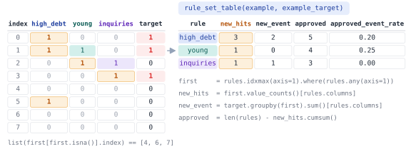
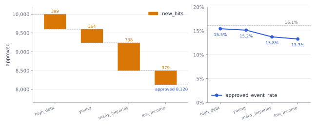

Policy rules#
Besides a score, a credit policy has rules that decline or refer an applicant whatever the score: a debt-to-income ratio above a cap, an applicant below a minimum age, too many recent credit inquiries. Each rule raises the same questions: how many applicants it hits, how risky they are, which declines rest on it alone, and what it adds to the rules before it. kivi.rules answers them: rule_table() counts the hits and the events of each rule, and rule_set_table() applies the rules in order, as a decision waterfall, and reports the book they leave approved with the columns of cutoff_table(). rule_candidates() proposes new rules: it searches each numeric variable for thresholds whose hits are riskier than the sample.
Rules belong to the credit strategy of Credit strategy, the previous guide, which chooses the cut-off of the score, and come before the binning specifications, the next guide, which take the model to production.
Definitions#
A rule is a condition on the data of an applicant, passed as a column of booleans that is True where the rule hits, that is where it declines or flags the applicant. For a rule that hits the applicants \(H\) of a sample of \(n\) applicants, with the known outcomes \(K\) and the events \(E\),
The lift compares the event rate of the hits with that of the whole sample, and the recall is the share of all events that the rule hits. The unique hits of a rule are the applicants that it hits and no other rule of the set does.
A rule set applies its rules \(H_1, \dots, H_m\) in order. The new hits of rule \(j\) are those that no earlier rule hit, and the applicants still approved after it are those that none of the first \(j\) rules hit:
The approved book \(A_j\) is described as a cut-off describes its book: its size, its event rate \(\lvert A_j \cap E \rvert / \lvert A_j \cap K \rvert\), and the shares of all events and of all non-events that the rules up to \(j\) decline. With weights, every count is a sum of weights.
A worked example#
Eight applicants, three rules and three events. high_debt hits applicants 0, 1 and 5, young applicants 1 and 2, and inquiries applicants 2 and 3; applicants 0, 1 and 3 default:
>>> import numpy as np
>>> import pandas as pd
>>> from kivi.rules import rule_set_table, rule_table
>>> example = pd.DataFrame({
... "high_debt": [1, 1, 0, 0, 0, 1, 0, 0],
... "young": [0, 1, 1, 0, 0, 0, 0, 0],
... "inquiries": [0, 0, 1, 1, 0, 0, 0, 0],
... })
>>> example_target = [1, 1, 0, 1, 0, 0, 0, 0]
>>> rule_table(example, example_target)[["hits", "unique_hits", "event", "event_rate", "lift"]].round(3)
hits unique_hits event event_rate lift
rule
high_debt 3 2 2 0.667 1.778
young 2 0 1 0.500 1.333
inquiries 2 1 1 0.500 1.333
high_debt hits three applicants, two of whom default: an event rate of 2/3, against 3/8 for all eight, a lift of \((2/3) / (3/8) = 1.78\). Applicant 1 is also hit by young, so high_debt alone declines two. young has no unique hit: each of its applicants is hit by another rule as well. Applied in order, each rule counts only the applicants that the rules before it left:
>>> rule_set_table(example, example_target)[["new_hits", "new_event", "approved", "approved_event_rate"]]
new_hits new_event approved approved_event_rate
rule
high_debt 3 2 5 0.20
young 1 0 4 0.25
inquiries 1 1 3 0.00
young adds only applicant 2, and inquiries only applicant 3, the last event. The three approved applicants that remain, 4, 6 and 7, have no event.

The waterfall of the worked example. Each applicant’s first hit, marked, counts in the new_hits of its rule, and a later hit of the same applicant, such as that of young on applicant 1, counts only in the hits of rule_table(). The applicants hit by no rule stay approved.#
Rules on the applications#
The examples use the synthetic applications of make_applications(), described in Example data. Two policy rules declined some of them whatever their score: a debt-to-income ratio above 0.6 and an age below 21. Two candidate rules join them: three or more credit inquiries in the last six months, and a monthly income below 1,500. Each rule is a column of booleans built from the data:
>>> from kivi.datasets import make_applications
>>> applications = make_applications(rng=0)
>>> rules = pd.DataFrame({
... "high_debt": applications["debt_to_income"] > 0.6,
... "young": applications["age"] < 21,
... "many_inquiries": applications["inquiries"] >= 3,
... "low_income": applications["income"] < 1500,
... })
>>> target = applications["target"]
The two policy rules give exactly the column policy_decline of the data:
>>> (rules["high_debt"] | rules["young"]).equals(applications["policy_decline"])
True
The simulation gives every applicant an outcome, also those that were declined, so the first examples measure each rule on all the applicants it hits. Real data have outcomes only for the approved applicants; Unknown outcomes shows what the tables report then.
Hit table#
rule_table() evaluates each rule on every applicant, whatever the other rules do. Without a target it counts the hits, which are known for every applicant:
>>> rule_table(rules)
hits hit_rate unique_hits
rule
high_debt 399 0.0399 340
young 377 0.0377 289
many_inquiries 799 0.0799 699
low_income 482 0.0482 379
With the target, it adds the outcomes of the hits:
>>> table = rule_table(rules, target)
>>> table[["known", "event", "event_rate", "lift"]].round(3)
known event event_rate lift
rule
high_debt 399 125 0.313 1.946
young 377 89 0.236 1.466
many_inquiries 799 261 0.327 2.029
low_income 482 122 0.253 1.572
>>> table[["recall", "unique_event"]].round(3)
recall unique_event
rule
high_debt 0.078 97
young 0.055 63
many_inquiries 0.162 216
low_income 0.076 88
The applicants with a debt-to-income ratio above 0.6 default at 31.3%, almost twice the 16.1% of all applicants, so the rule has a lift of 1.95. It hits 4% of the applicants and 7.8% of the events. many_inquiries hits twice as many applicants at a slightly higher event rate, and catches 16.2% of the events. The rules overlap little: 340 of the 399 applicants with a high debt-to-income ratio are hit by no other rule.
Column |
Meaning |
|---|---|
|
Applicants that the rule hits, and their share of all applicants. |
|
Applicants that this rule hits and no other rule of the set does: the declines that rest on this rule alone. |
|
Hits with a known outcome. |
|
Events among the hits, and their share of the known hits. |
|
|
|
Share of all known events that the rule hits. |
|
Events among the unique hits. |
The rows of the table do not add up, because an applicant hit by two rules counts in both. A rule is worth its declines when its event rate is well above the rate at which the business breaks even, as for the marginal bad rate of a cut-off in Credit strategy. To compare thresholds of one rule, pass one column per threshold, for example inquiries >= 2, >= 3 and >= 4.
Overlap matrix#
The overlap of two rules is the number of applicants that both hit. For every pair at once, it is the product of the rule columns as 0 and 1, which needs no function of its own:
>>> hits = rules.astype(int)
>>> overlap = hits.T @ hits
>>> overlap
high_debt young many_inquiries low_income
high_debt 399 13 28 20
young 13 377 33 44
many_inquiries 28 33 799 43
low_income 20 44 43 482
The diagonal holds the hits of rule_table(). Dividing each row by its diagonal gives the share of the row rule’s hits that the column rule also hits:
>>> overlap.div(np.diag(overlap), axis=0).round(3)
high_debt young many_inquiries low_income
high_debt 1.000 0.033 0.070 0.050
young 0.034 1.000 0.088 0.117
many_inquiries 0.035 0.041 1.000 0.054
low_income 0.041 0.091 0.089 1.000
The largest overlap is between young and low_income: 11.7% of the young applicants have an income below 1,500, because income rises with age in the data. Convert boolean columns to integers first: the product of two boolean columns is a boolean, True when at least one applicant is hit by both rules, and not a count. Multiplying by the target instead, hits.T @ hits.mul(target, axis=0), counts the events that both rules hit.
Decision waterfall#
rule_set_table() applies the rules in the order of the columns. Each rule declines the applicants that it hits among those that the rules before it left, so every hit counts once, under the first rule that hits it:
>>> waterfall = rule_set_table(rules, target)
>>> waterfall[["new_hits", "new_event", "approved", "approval_rate"]].round(3)
new_hits new_event approved approval_rate
rule
high_debt 399 125 9601 0.960
young 364 84 9237 0.924
many_inquiries 738 232 8499 0.850
low_income 379 88 8120 0.812
>>> waterfall[["approved_event", "approved_event_rate", "rejected_event_share"]].round(3)
approved_event approved_event_rate rejected_event_share
rule
high_debt 1485 0.155 0.078
young 1401 0.152 0.130
many_inquiries 1169 0.138 0.274
low_income 1081 0.133 0.329
>>> waterfall["rejected_non_event_share"].round(3)
rule
high_debt 0.033
young 0.066
many_inquiries 0.126
low_income 0.161
Name: rejected_non_event_share, dtype: float64
The first row is high_debt on its own. young adds 364 applicants, the 377 it hits less the 13 that high_debt has already declined. After all four rules, 8,120 applicants, 81.2%, are approved, with an event rate of 13.3% instead of 16.1%. The rules decline 32.9% of the events and 16.1% of the non-events.

The decision waterfall of the four rules. Each bar is the new_hits of a rule, from the applicants the rules before it left approved; the line is the approved_event_rate after the rule, against the event rate of all applicants, dashed.#
Column |
Meaning |
|---|---|
|
Applicants that the rule hits and no earlier rule did, and the events among them. |
|
Applicants that none of the rules up to this one hits, and their share of all applicants. |
|
Events among the approved applicants, and their share of the approved applicants with a known outcome. |
|
Share of all known events that a rule up to this one declines. |
|
Share of all known non-events that a rule up to this one declines: the good business the rules give up. |
The cumulative columns are those of cutoff_table(), so a row reads like a cut-off: with every outcome known, it equals cutoff_table(declined, target, cutoffs=[0]) where declined is 1 for the applicants that a rule up to that row hits and 0 for the others.
A score cut-off is a rule too. The decisions of the simulated data are a waterfall of the two policy rules and the cut-off of 0.15 on incumbent_pd, and its last row approves exactly the applicants marked approved:
>>> decisions = rules[["high_debt", "young"]].assign(high_pd=applications["incumbent_pd"] >= 0.15)
>>> rule_set_table(decisions)[["new_hits", "approved", "approval_rate"]].round(3)
new_hits approved approval_rate
rule
high_debt 399 9601 0.960
young 364 9237 0.924
high_pd 2467 6770 0.677
>>> int(applications["approved"].sum())
6770
Rule order#
The order of the rules decides which rule gets the credit for a decline that several rules share, but not which applicants the set declines. Applying the candidate rules first gives them more new hits and the policy rules fewer:
>>> order = ["many_inquiries", "low_income", "high_debt", "young"]
>>> reordered = rule_set_table(rules[order], target)
>>> pd.DataFrame({
... "policy_first": waterfall["new_hits"],
... "candidates_first": reordered["new_hits"].reindex(waterfall.index),
... })
policy_first candidates_first
rule
high_debt 399 353
young 364 289
many_inquiries 738 799
low_income 379 439
The last row describes the whole set and does not change:
>>> cumulative = ["approved", "approved_event", "rejected_event_share", "rejected_non_event_share"]
>>> waterfall[cumulative].iloc[-1].equals(reordered[cumulative].iloc[-1])
True
A rule’s new hits range from its unique_hits in rule_table(), when it comes last, to its hits, when it comes first: young adds 289 applicants in the last place and 377 in the first. The unique hits are therefore the applicants that removing the rule from the set would approve. A rule with few unique hits adds little to the others, however many applicants it hits. Report the waterfall in the order in which the rules run in production, for example with the rules that need no credit bureau data first, which are the cheapest to check.
Unknown outcomes#
In real data, the outcome is known only for the applicants that were approved: the others never received a loan. Pass missing labels for them. They count in the hits and in approved, but not in known, event and the rates and shares:
>>> observed = target.where(applications["approved"])
>>> rule_table(rules, observed)[["hits", "known", "event", "event_rate", "lift"]].round(3)
hits known event event_rate lift
rule
high_debt 399 0 0 NaN NaN
young 377 0 0 NaN NaN
many_inquiries 799 260 41 0.158 1.620
low_income 482 184 27 0.147 1.507
The policy rules declined every applicant they hit, so none of their hits has a known outcome, and their event rate cannot be measured on the data they produced. The candidate rules are measured on the 260 and 184 of their hits that were approved. On the approved applicants they show what adding them to the current policy would change. Put them after the current decisions:
>>> extended = rule_set_table(decisions.join(rules[["many_inquiries", "low_income"]]), observed)
>>> extended[["new_hits", "new_event", "approved", "approved_event_rate"]].round(4)
new_hits new_event approved approved_event_rate
rule
high_debt 399 0 9601 0.0973
young 364 0 9237 0.0973
high_pd 2467 0 6770 0.0973
many_inquiries 260 41 6510 0.0949
low_income 181 27 6329 0.0934
>>> extended[["approval_rate", "rejected_event_share", "rejected_non_event_share"]].round(3)
approval_rate rejected_event_share rejected_non_event_share
rule
high_debt 0.960 0.000 0.000
young 0.924 0.000 0.000
high_pd 0.677 0.000 0.000
many_inquiries 0.651 0.062 0.036
low_income 0.633 0.103 0.061
The current decisions approve 6,770 applicants with an observed event rate of 9.73%. The two candidate rules would decline 441 of them, lower the approval rate from 67.7% to 63.3% and the event rate to 9.34%, and avoid 10.3% of the known events for 6.1% of the known non-events. Whether that pays depends on the margin of a good loan and the loss of a bad one, as in Credit strategy. Every number of this table is known in practice, because the candidate rules only decline applicants with a known outcome.
Simulation check
The simulated declined applicants do have an outcome. The applicants that the policy rules declined default at 31.3% and 23.6%, which the observed outcomes cannot show, and the candidate rules hit much riskier applicants among the declined ones than among the approved ones:
>>> pd.DataFrame({
... "observed": rule_table(rules, observed)["event_rate"],
... "all_hits": rule_table(rules, target)["event_rate"],
... }).round(3)
observed all_hits
rule
high_debt NaN 0.313
young NaN 0.236
many_inquiries 0.158 0.327
low_income 0.147 0.253
The incumbent scorecard already declined the riskiest applicants with many inquiries, so the approved ones default at half the rate of all of them. Event rates measured on approved applicants describe the rule as an addition to the current policy, not the rule on its own.
Missing values#
A missing value in rules raises an error, because whether a rule hits when its data are missing is part of the rule. Comparisons of NumPy floats return False for NaN, so a rule built from a comparison silently does not hit where the value is missing. pandas’ nullable dtypes return a missing value instead, which rule_table() and rule_set_table() reject:
>>> income = applications["income"].astype("Float64")
>>> income[[0, 1]] = pd.NA
>>> rule_table(pd.DataFrame({"low_income": income < 1500}))
Traceback (most recent call last):
...
ValueError: rules column 'low_income' must not have missing values, got 2; decide whether the rule hits when its data are missing
Decide with fillna: (income < 1500).fillna(True) declines applicants whose income is unknown, and fillna(False) approves them. A missing label in target is not an error but an unknown outcome, as Unknown outcomes shows.
Sample weights#
Both functions take weights, one non-negative frequency weight per applicant, as the functions of kivi.strategy do. Counts become sums of weights, so integer weights give the same tables as repeating rows. An outcome-based sample, which keeps every event and a quarter of the non-events, gets back the event rates of all applicants with a weight of 4 for the non-events:
>>> rng = np.random.default_rng(0)
>>> kept = (target == 1) | (rng.random(len(target)) < 0.25)
>>> sample_weights = np.where(target[kept] == 1, 1.0, 4.0)
>>> pd.DataFrame({
... "unweighted": rule_table(rules[kept], target[kept])["event_rate"],
... "weighted": rule_table(rules[kept], target[kept], weights=sample_weights)["event_rate"],
... "everyone": table["event_rate"],
... }).round(3)
unweighted weighted everyone
rule
high_debt 0.676 0.342 0.313
young 0.571 0.249 0.236
many_inquiries 0.632 0.300 0.327
low_income 0.584 0.260 0.253
Without the weights, the sample of 3,724 applicants overstates every event rate, because it keeps only a quarter of the non-events. The weighted rates differ from those of all applicants only by the sampling of the non-events.
Searching for rules#
The rules above came from a policy. rule_candidates() proposes thresholds from the data, one variable at a time. For each numeric column it fits cut points with tree_edges() (or with ks_edges(), method="ks"), takes each interior edge \(t\) and keeps the side, > t or <= t, whose hits default more often. It keeps the rules that hit at least min_hit_rate of the applicants and have at least min_lift, and lists them from the highest lift down. The first 6,000 applications are the development sample here, and the last 4,000 the validation sample:
>>> from kivi.rules import rule_candidates
>>> development, validation = applications.iloc[:6000], applications.iloc[6000:]
>>> columns = ["age", "income", "debt_to_income", "inquiries"]
>>> candidates = rule_candidates(
... development, development["target"], columns=columns, min_lift=1.5
... )
>>> candidates[["operator", "threshold", "hits", "hit_rate", "event_rate", "lift"]].round(3)
operator threshold hits hit_rate event_rate lift
rule
inquiries > 3.0 > 3.00 136 0.023 0.412 2.529
inquiries > 2.0 > 2.00 475 0.079 0.347 2.133
debt_to_income > 0.58 > 0.58 283 0.047 0.329 2.018
income <= 1650.0 <= 1650.00 448 0.075 0.279 1.714
income <= 1850.0 <= 1850.00 701 0.117 0.262 1.612
inquiries > 1.0 > 1.00 1475 0.246 0.256 1.574
debt_to_income > 0.42 > 0.42 1162 0.194 0.248 1.522
income <= 1790.0 <= 1790.00 621 0.104 0.246 1.513
Without columns every numeric column is searched, and categorical and boolean columns are skipped (naming one in columns raises an error). The count columns of the table, hits, hit_rate, known, event, event_rate and lift, are those of rule_table(), in its order, and they are exactly what rule_table() reports for the rule written as a column of booleans (below), also with weights: the lift is the event rate of the hits divided by the event rate of all known outcomes. Several thresholds of one variable, such as inquiries > 2 and inquiries > 1, overlap and are alternatives, so choose one for each variable. A candidate becomes a rule when you write it as a column of booleans, which rule_table() and rule_set_table() take as they are:
>>> chosen = candidates.loc[["inquiries > 2.0", "debt_to_income > 0.58", "income <= 1850.0"]]
>>> def as_rules(frame, table, special=None):
... special = special or {}
... rules = {}
... for name, row in table.iterrows():
... values = frame[row["variable"]]
... hit = values.gt(row["threshold"]) if row["operator"] == ">" else values.le(row["threshold"])
... # Special codes and missing values hit no threshold rule.
... rules[name] = (hit & ~values.isin(special.get(row["variable"], []))).fillna(False)
... return pd.DataFrame(rules)
>>> rule_set_table(as_rules(development, chosen), development["target"])[
... ["new_hits", "new_event", "approved", "approved_event_rate"]
... ].round(3)
new_hits new_event approved approved_event_rate
rule
inquiries > 2.0 475 165 5525 0.147
debt_to_income > 0.58 259 77 5266 0.140
income <= 1850.0 611 145 4655 0.127
The thresholds and their event rates come from the same applicants, so they are optimistic, as the IV of supervised bins is. Measure the chosen rules again on applicants that the search did not see:
>>> pd.concat(
... {
... "development": rule_table(as_rules(development, chosen), development["target"]),
... "validation": rule_table(as_rules(validation, chosen), validation["target"]),
... },
... axis=1,
... )[[("development", "event_rate"), ("validation", "event_rate")]].round(3)
development validation
event_rate event_rate
rule
inquiries > 2.0 0.347 0.296
debt_to_income > 0.58 0.329 0.341
income <= 1850.0 0.262 0.256
The inquiries rule falls from 34.7% to 29.6%, while debt_to_income holds and income is nearly unchanged. The shrinkage is part of the price of a search, so judge a rule by its validation event rate, not by its lift in the development sample.
Missing values and special codes hit no threshold rule, and the search leaves them out of the fit. special names the codes of each column, as fit_spec() does. To decline or flag a special code, write it as a rule of its own and measure it with rule_table(), whose lift shows whether it is risky. Here every twentieth income is replaced by the code -1:
>>> coded = development.assign(income=development["income"].mask(np.arange(6000) % 20 == 0, -1))
>>> found = rule_candidates(
... coded, coded["target"], columns=["income"], special={"income": [-1]}, min_lift=1.2
... )
>>> found[["operator", "threshold", "hits", "lift"]].round(3)
operator threshold hits lift
rule
income <= 1640.0 <= 1640.0 419 1.715
income <= 1850.0 <= 1850.0 673 1.597
income <= 1750.0 <= 1750.0 545 1.499
income <= 2420.0 <= 2420.0 1569 1.366
>>> rule_table(pd.DataFrame({"income_unknown": coded["income"] == -1}), coded["target"])[
... ["hits", "event_rate", "lift"]
... ].round(3)
hits event_rate lift
rule
income_unknown 300 0.133 0.819
None of the thresholds hits the 300 coded applicants, who default at 13.3%, less often than the sample (a lift of 0.82), so they need no rule. Written with the exclusion of the codes, as as_rules does, the candidates have the counts of the table:
>>> measured = rule_table(as_rules(coded, found, {"income": [-1]}), coded["target"])
>>> measured["hits"].equals(found["hits"]) and np.allclose(measured["lift"], found["lift"])
True
Without the exclusion, income <= 1640 would also hit the coded applicants, because -1 is below the threshold.
The cut points are fit with a smallest bin of min_hit_rate of the applicants, so the search can find a small risky tail, such as the 136 applicants (2.3%) with more than three inquiries in the table above, as well as a broad one.
Limits#
A rule in force declines every applicant it hits, so the outcomes it produces cannot measure it. Only a test group of applicants that are approved despite the rule, or reject inference, gives its event rate.
The tables give no confidence intervals. With a few hundred known outcomes, an event rate is uncertain by several points, and the difference between two rules may be noise.
rule_candidates()looks at one variable at a time and finds only single thresholds. It does not combine variables, and it does not search categorical columns, where a rule is a list of categories that you write yourself. Its candidates are found and measured on the same applicants, so they are optimistic: re-check them withrule_table()on a validation sample, as shown above, before putting them in the policy.The new hits of a rule depend on the order of the set. Compare rules by their hits and unique hits, and use the waterfall for the decisions of one fixed order.
Errors and warnings#
The functions raise ValueError and do not warn. The errors that readers are likely to meet:
A rule column that is not boolean or 0 and 1, such as a raw column of the data passed by mistake:
rules column 'inquiries' must contain only booleans or 0 and 1. Build the rule with a comparison, such asapplications["inquiries"] >= 3.A missing value in a rule, shown in Missing values above.
A target or weights that do not describe the rows of
rules:rules and target must have identical indiceswhen a Series has another index, for example a target of all applications next to rules built on a subset, ortarget must have one label per row of ruleswhen an array has another length. Select the same rows of both, as inrule_table(rules[kept], target[kept]).